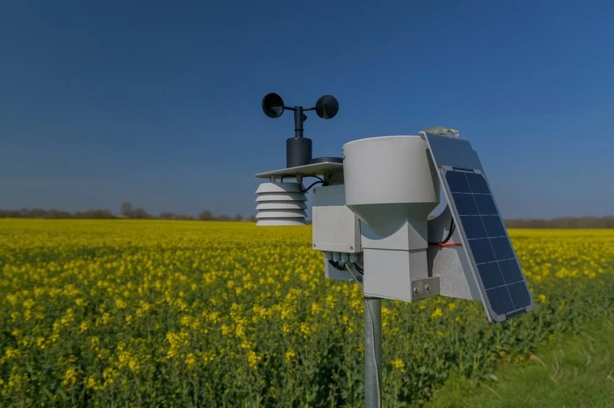
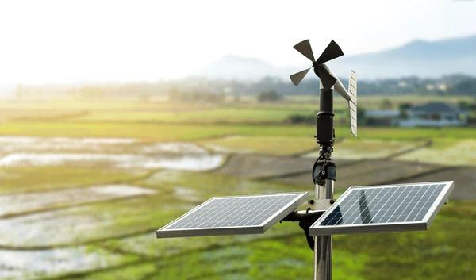
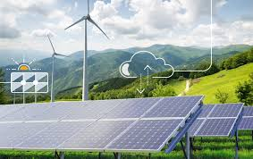
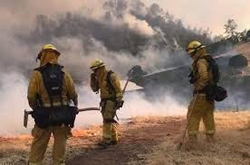

AIPL offers sophisticated weather monitoring systems designed to deliver precise and real-time data on weather conditions. Our cutting-edge solutions are tailored to meet the needs of various sectors, ensuring safety, enhancing operational efficiency, and facilitating informed decision-making. Leveraging advanced technology, AIPL’s weather monitoring solutions provide reliable data to help you stay ahead of changing weather patterns.

Weather monitoring plays a crucial role in various sectors, including agriculture, aviation, disaster management, and everyday forecasting. Monitoring weather conditions accurately and in real-time is essential for making informed decisions that can impact safety, productivity, and planning. Weather monitoring solutions encompass a range of technologies and systems designed to collect, process, and analyze meteorological data. These solutions utilize advanced sensors, satellite imagery, ground-based observations, and computational models to provide comprehensive insights into current and future weather patterns.
Our systems use the latest sensors and data processing technology to provide accurate and reliable weather information.
We offer customized weather monitoring solutions to meet the specific needs of various industries and applications.
AIPL provides full support services, including system installation, maintenance, and technical assistance to ensure seamless operation.
Our solutions are competitively priced, ensuring you get the best value without compromising on quality or performance.
We are committed to promoting sustainability by providing solutions that help mitigate the impact of adverse weather conditions on operations and the environment.

Monitor weather conditions to optimize planting schedules, irrigation, and pest control, ensuring better crop yields and resource management.
Provide real-time weather data to pilots and air traffic controllers to enhance flight safety and operational efficiency.
Use weather data to plan construction activities, ensuring safety and reducing downtime caused by adverse weather conditions.

Monitor weather conditions to maximize the efficiency of wind and solar energy installations and protect equipment from weather-related damage.

Provide critical weather information to emergency responders and the public during natural disasters, aiding in effective response and recovery efforts.